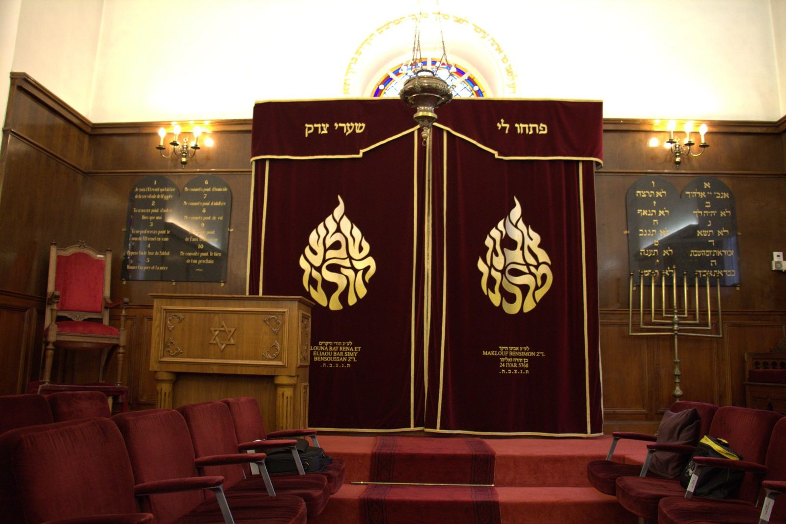

Synagogue de Pau
La synagogue ouvre ses portes chaque Chabat et chaque fête, depuis 1880, au cœur de la ville. Messieurs, venez compléter le minyane !
Les rendez-vous de la synagogue
- Vendredi soirMinha, Chir Hachirim, puis Arvit de Chabat à 18h30
- Samedi 9h00Chaharit de Chabat, suivi d'un kidouch
- Samedi après-midiMinha, séouda chlichit, Arvit et fin du Chabat
- Dimanche 10h-12hMakolette, l'épicerie casher
- Jeudi 19h30Cours de pensée juive
Les heures exactes changent chaque semaine. Le Rav envoie le programme détaillé le vendredi.


8, rue des 3 Frères Bernadac
La synagogue se trouve au centre de Pau. Pour une première visite, merci de prévenir l'accueil à l'avance : c'est ce qui nous permet de vous recevoir en toute sécurité.
Horaires
Les heures d'entrée et de sortie de Chabat et des fêtes pour Pau, de Noah 5787 à Lékh Lékha 5788.
Une semaine type à la synagogue
- VendrediMinha suivie de Chir Hachirim, puis Arvit de Chabat à 18h30
- Samedi 9h00Chaharit de Chabat, suivi d'un kidouch souvent offert par un fidèle
- Samedi après-midiMinha suivie de la séouda chlichit, puis Arvit et fin du Chabat
- Dimanche 10h-12hMakolette
- Jeudi 19h30Cours de pensée juive
Allumer avant l'heure
Les bougies s'allument avant l'heure d'entrée du Chabat ou de la fête. La mention « ** » signifie qu'on allume à partir d'une flamme déjà allumée avant le début de la fête.
Les cinq prochains rendez-vous
| Date | Paracha / fête | Entrée | Sortie |
|---|
Entrée : heure limite d'allumage des bougies, la veille au soir.
Toute l'année 5787 (Chabatot et fêtes)
| Date | Paracha / fête | Entrée | Sortie |
|---|
À imprimer recto verso et à aimanter sur le frigo. Les zmanim du mois seront bientôt proposés aussi.

La communauté
L'Association Cultuelle Israélite de Pau fait vivre la synagogue. Le Centre Culturel Israélite de Pau porte les activités culturelles.
Les offices
Le vendredi soir et le samedi matin, suivis d'un kidouch souvent offert par un fidèle. Chaque homme qui vient aide à compléter le minyane.
La Makolette
L'épicerie casher de la communauté : charcuterie, épicerie, plats cuisinés, vin, jus de raisin, fromages… et un large choix de viande surgelée sur commande (veau, agneau, volaille, bœuf).
Cours de pensée juive
Un cours hebdomadaire ouvert à tous, homme ou femme, quel que soit son niveau.

Rav Mendy Matusof
Habad Pyrénées. Le Rav répond aux questions sur les offices, les fêtes et la halakha. Il prépare chaque semaine le programme de la synagogue.
Email : habadpyrenees@gmail.com
Vivre son judaïsme à Pau
Le mikvé
La communauté dispose d'un mikvé, pour la pureté familiale, les conversions et la tevila des ustensiles neufs.
Pour les dames, prendre rendez-vous :
Eliora Ribes · 06 81 61 29 53
Shayna Matusof · 06 65 95 47 09
Passer un Chabat à Pau
Les familles nouvellement arrivées ou de passage, et les étudiants, peuvent être invités pour les repas de Chabat. Des 'halot et des plats à emporter peuvent aussi être fournis, et nous indiquons les hôtels proches de la synagogue adaptés au Chabat.
Renseignements auprès du Rav : habadpyrenees@gmail.com
Hevra Kadicha
La communauté dispose d'une 'Hevra Kadicha, et d'un carré juif au cimetière municipal de Pau. En cas de besoin, appelez le 05 59 62 37 85 (laissez un message, nous vous rappelons au plus vite) ou écrivez à synagoguedepau64@gmail.com.

Une prière pour un être cher disparu
Vous souhaitez qu'une prière soit dite à la mémoire d'un proche ? Chaque année, le Chabat qui précède l'anniversaire de son décès, son nom sera rappelé à la synagogue lors de la azkara.
Il suffit de nous indiquer son nom, son prénom hébraïque, le prénom de son père ou de sa mère et la date de son décès.

La lettre de la communauté
L'ACIP envoie par email les horaires de l'année, les fêtes et les nouvelles de la communauté. Pour la recevoir, écrivez à synagoguedepau64@gmail.com.

Présence juive à Pau
Cinq siècles d'histoire au pied des Pyrénées, de l'exil d'Espagne à la communauté d'aujourd'hui.
- Après 1492
Au pied des Pyrénées, Pau accueille des Juifs chassés d'Espagne par le décret d'expulsion. On retrouve leur trace dans les actes de conversion des registres paroissiaux.
- 1787-1808
L'édit de tolérance de Louis XVI (7 novembre 1787) ouvre l'état civil aux non-catholiques. En 1791, la Révolution émancipe les Juifs, qui deviennent citoyens. Napoléon organise le culte israélite : le décret impérial du 17 mars 1808 crée les consistoires. Celui des Basses-Pyrénées s'installe à Bayonne et couvre aussi les Landes.
- 1822
La petite communauté paloise achète à un ancien instituteur, Pierre Pées, un terrain de 4 ares et 64 centiares pour 366,50 francs, chemin de Buros, pour y créer son cimetière. Il compte aujourd'hui 118 tombes.
- 1875
Le 26 juillet, le Conseil des ministres nomme le premier rabbin consistorial de Pau.
- 1878-1880
Le 26 juin 1878, le conseil municipal, où siègent Lazare Léon et Mayer Lévy, autorise l'achat d'un terrain pour construire un oratoire. La synagogue est inaugurée en 1880.

Un des vitraux de la salle de prière. - 1939-1945
La synagogue fonctionne pendant toute la guerre, avec le rabbin Bauer. Pau est d'abord en zone libre, et la frontière espagnole toute proche représente un espoir. Le 26 août 1942, une rafle des Juifs « étrangers » fait 184 arrestations. À 50 km, le camp de Gurs interne environ 64 000 personnes entre 1939 et 1945, dont plus de 20 000 Juifs ; plus de 1 000 y meurent et des milliers sont déportés vers Auschwitz. Une grande rafle était prévue le 10 juillet 1944 : les listes, retrouvées en 2024, comptent 1 900 noms.
- Années 1960
Presque vidée après la guerre, la communauté renaît avec la découverte du gaz de Lacq et l'arrivée des Juifs d'Afrique du Nord : mikvé, centre communautaire et association culturelle voient le jour.
- Aujourd'hui
La communauté compte aujourd'hui une centaine de personnes. La synagogue ouvre chaque Chabat et chaque fête.

Galerie
L'intérieur de la synagogue : la salle, l'Aron, les vitraux, les objets du culte.

Soutenir la synagogue
La synagogue, le mikvé, la Makolette et les offices vivent grâce à la générosité de chacun.
Faire un don
Vous pouvez soutenir l'Association Cultuelle Israélite de Pau par un don en ligne, sécurisé, sur la plateforme Allodons. Votre don à une association cultuelle ouvre droit à un reçu fiscal.
Honorer une promesse de don
Vous avez promis un don à la synagogue, par exemple lors d'une montée à la Torah le samedi matin ? Vous pouvez l'honorer en ligne de la même façon, en indiquant le Chabat et l'occasion dans le message du don.
Pour toute question : synagoguedepau64@gmail.com

Venir & contact
Chacun est le bienvenu. Pour une première visite, prévenez-nous à l'avance.
- Adresse
- 8, rue des 3 Frères Bernadac, 64000 Pau
- Téléphone
- 05 59 62 37 85
- synagoguedepau64@gmail.com
- Plan
- Ouvrir la carte
Avant une première visite, prévenez-nous
Pour être accueilli en toute sécurité, contactez au préalable François Basse, responsable de l'accueil, à l'adresse synagoguedepau64@gmail.com.